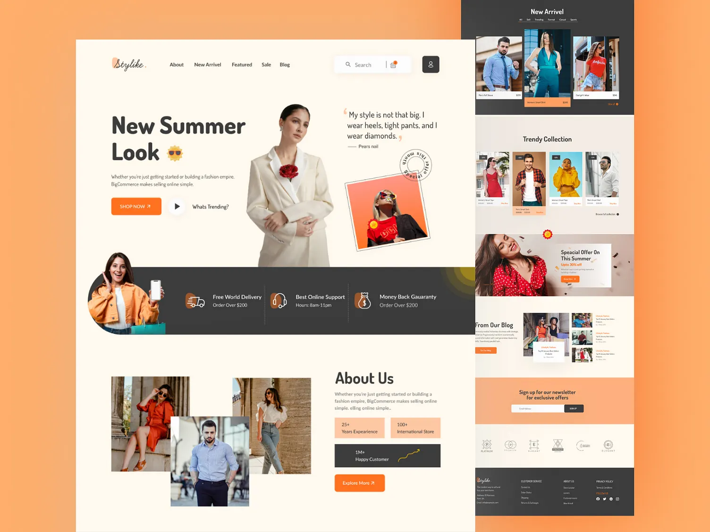

Live social proof
Show recent purchases, sign-ups, and activity in real time. Visitors see that others are engaging—so they stay and convert.
Social proof & FOMO in one widget
Fomo-Widget adds live notifications to your website—recent sign-ups, purchases, and “X people viewing”—so new visitors see real proof and take action.
No credit card required

Features
One widget. Real-time activity. Honest urgency. Everything you need to make your site stickier and more persuasive.
Show recent purchases, sign-ups, and activity in real time. Visitors see that others are engaging—so they stay and convert.
Create gentle urgency with “selling fast,” “X people viewing,” and low-stock cues. Honest scarcity that boosts desire without pressure.
Add one snippet to your site. Place the widget where you want—sidebar, inline, or corner. No heavy code or complex setup.
Keep visitors on the page longer. Real-time activity and relevance make your site feel alive and worth their time.
How it looks
Non-intrusive popups or inline blocks. You choose where and how to show social proof—overlay or inline, so it feels native to your site.
How it works
Add Fomo-Widget to any website with a single script. No lock-in, no heavy dependencies.
Create an account and copy your unique widget code from the dashboard.
Add the script before </body> or via your tag manager. One line, one place.
Choose what to show (purchases, sign-ups, urgency) and where. Hit publish—your site is stickier.
FAQ
No strings attached. Find out how social proof and FOMO can increase stickiness and conversions on your site.
Start 14-day free trial
Testimonials
What people say about social proof